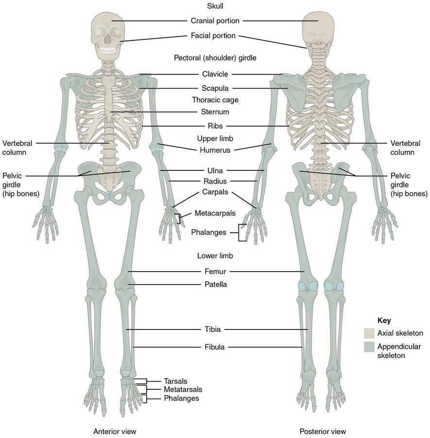

DownstreamMusculoskeletal system
Musculoskeletal system
Structure, protection, movement.

Where things go wrong
Every condition below is filed under the part it physically damages. Read down the list and notice that the groups are really a list of the ways this system can fail — and that knowing which group you are in tells you most of what you need before you have a diagnosis.
Bones
Failure mode: Structure breaks, and bleeds
Living tissue with a mineralised matrix, a rich blood supply, and marrow in the centre. Long bones have a hard outer cortex and a spongy interior, wrapped in periosteum that carries nerves and vessels.
What it does when it works
- Provides structural support, protects organs, and gives muscles something to pull against.
- Stores calcium and produces blood cells in the marrow.
- Continuously remodels, so it can heal a fracture completely rather than scarring.
- The periosteum is densely innervated, which is why fractures hurt so much.
Why this structure matters
A fracture is not just a structural problem, it is a bleeding problem. Bone is highly vascular and the surrounding muscle bleeds too. A closed femur fracture can lose over a litre into the thigh, a pelvic fracture several litres, and both can do so invisibly. Multiple long bone fractures can cause hemorrhagic shock with no external blood at all.
In the field
- Splinting is a hemorrhage control measure as much as a comfort measure. Immobilising a fracture reduces movement of the bone ends, which reduces ongoing bleeding.
- Always check circulation, sensation, and movement distal to a fracture, before and after any manipulation, and document both.
- An open fracture communicates with the outside and carries a serious infection risk, which changes urgency.
- In children, growth plates are weaker than ligaments, so where an adult sprains, a child fractures.
Joints and ligaments
Failure mode: The hinge comes apart
Where two bones meet, with cartilage covering the surfaces, a capsule enclosing the space, synovial fluid lubricating it, and ligaments holding bone to bone.
What it does when it works
- Cartilage provides a near-frictionless bearing surface with no direct blood supply, which is why it heals poorly.
- Ligaments allow movement in intended directions and resist it in others.
- Position sensors in the capsule and ligaments tell the brain where the limb is.
Why this structure matters
Dislocation is a time-critical problem in a way that sprains are not, because the displaced bone can compress or stretch the nerves and vessels that run close to the joint. Certain dislocations threaten specific structures reliably enough to be worth memorising.
In the field
- Knee dislocation, as opposed to kneecap dislocation, has a high rate of popliteal artery injury. Check the foot pulses and treat a pulseless dislocated knee as a genuine emergency.
- Posterior hip dislocation threatens the sciatic nerve and the blood supply to the femoral head.
- Shoulder dislocation threatens the axillary nerve, so check sensation over the deltoid.
- Splint dislocations in the position found unless the limb is pulseless. Do not attempt reduction outside your scope.
Muscles and fascial compartments
Failure mode: Pressure rises inside a space that can't expand
Muscles are bundled into groups wrapped in fascia, a tough inelastic sheet. Each wrapped group is a compartment containing muscle, nerves, and blood vessels. The lower leg has four; the forearm has three.
What it does when it works
- Muscle converts chemical energy into movement, and contracting muscle in the limbs also pumps venous blood back toward the heart.
- Fascia keeps muscle groups organised and transmits force efficiently.
- Fascia does not stretch meaningfully, which is fine until something inside starts swelling.
Why this structure matters
This is the same closed-box problem as the skull and the pericardium, in a limb. Bleeding or swelling inside a compartment raises the pressure, and because the fascia will not give, that pressure squeezes the capillaries shut. The muscle becomes ischemic while a distal pulse is still perfectly palpable, because arterial pressure is far higher than capillary pressure.
In the field
- The presence of a pulse does not rule out compartment syndrome and is one of the most dangerous false reassurances in trauma.
- The earliest and most reliable sign is pain out of proportion to the injury, and pain on passive stretch of the muscles in that compartment.
- Tight casts, circumferential burns, crush injury, and fractures are the common causes.
- Muscle dies within about four to six hours of ischemia, and the damage is permanent.
Pelvis
Failure mode: A ring breaks and a huge space fills with blood
A bony ring formed by two innominate bones and the sacrum, joined by very strong ligaments. It protects the bladder, rectum, reproductive organs, and a dense plexus of veins and arteries.
What it does when it works
- Transfers weight from the spine to the legs.
- Because it is a ring, it is inherently stable and cannot break in only one place. If you find one fracture, there is another.
- The retroperitoneal space behind it can accommodate several litres of blood before anything becomes externally obvious.
Why this structure matters
Pelvic fractures kill through hemorrhage. The venous plexus over the back of the pelvis bleeds heavily, the space it bleeds into is large, and the bleeding does not tamponade itself the way a limb might. Mortality in unstable pelvic fractures with hemodynamic instability is very high.
In the field
- Do not spring or rock the pelvis to test stability. It achieves nothing diagnostically and can disrupt a clot that had formed. Assess by mechanism, pain, and appearance.
- A binder placed at the level of the greater trochanters, not the iliac crests, reduces pelvic volume and helps clots hold. It is one of the highest-value trauma interventions available at EMR level.
- Log-rolling a suspected pelvic fracture can restart bleeding. Use a scoop stretcher instead where possible.
- Blood at the urethral meatus, scrotal or perineal bruising, and leg length or rotation asymmetry all suggest pelvic injury.
Downstream is a study tool, not a field reference and not medical direction. Doses and protocols change; your service’s medical control protocols are the authority of record. Scope tags reflect Alberta and should be verified against your own registration and service policy.